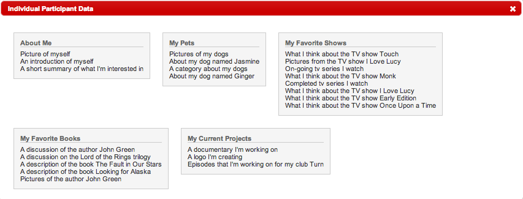
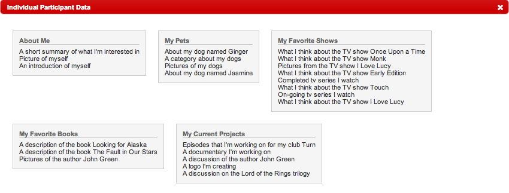
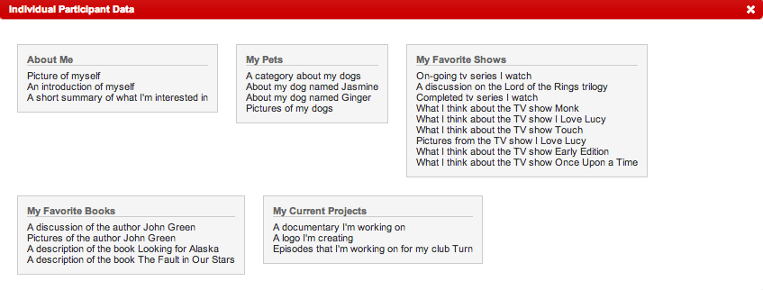
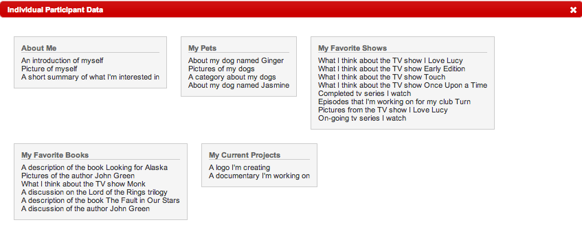

I'm not entirely sure what I want my final website to be, but I suppose I will just expand on my personal website. I'm not sure how much content we would be expected to change, but for now I will plan to keep what I have, and add an additional category.




My sort for this website, like foldable.me, also stayed true to the original architecture. I guess to me, my information is fairly simple, and my categories are pretty obvious, so I don't see a reason to deter from what I have. Partly, I would also say I'm still influenced by the fact I have a certain vision in mind, so I'm obviously sorting to my own vision.
For the most part my friend's sorted fairly similar to what I had in mind, there were a few differences, but I think this can be chalked up to their being unsure of what the snippet I used to describe the content was about. I noticed one mistake, was I didn't specify which trilogy I was talking about in regards to LOTR, so I confused some of my friends who weren't sure if I was referring to the book or the movie. Overall though, I'm fairly confident that my site design is mostly intuitive, and unless I do some major expansion, I should have no problems content-organization-wise.